On this page
Your number. You are signed in as participant-NN. Everywhere this guide shows NN, type your own two digits (participant-07 → 07). Fifteen people share this AWS account, so every name you create must contain your number.
Your region. Everything happens in US West (Oregon) · us-west-2. Check the region picker in the top-right corner of the console before every step. If you cannot find something you created, you are almost certainly in the wrong region.
Part 0 · The idea in five minutes
The story so far. You have just joined a four-person team. The release build runs on Dave's laptop. Dave is on holiday for two weeks, and the last thing he did was write flaky?? passes on my laptop next to a unit test and switch it off. Your job today: move the build off Dave's laptop into a machine nobody logs into, then find out what Dave was hiding.
The problem CI solves
Imagine four developers on one project. Each builds the app on their own laptop with slightly different Java versions, slightly different environment variables, slightly different "I just tweak this one thing before I compile" habits. The app that ships is whichever laptop happened to produce the release. When it breaks in production nobody can reproduce it.
Continuous Integration (CI) replaces that with a rule: every change is built and tested by a machine nobody logs into, from a clean slate, the same way every time. The machine's verdict (green or red) is the only one that counts.
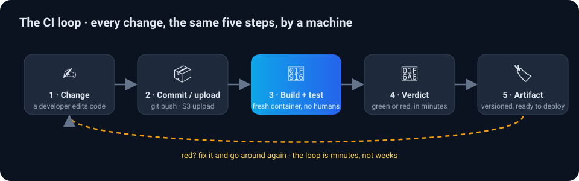
What a "build" actually is
A build turns source (files humans wrote) into an artifact (a thing a computer can run or deploy). For our Java app that means:
- Install the tools (a Java compiler, Maven).
- Compile the source files into bytecode.
- Test – run the unit tests; if any fail, stop here with a red light.
- Package the result into one file – a
.jar.
What CodeBuild does for you
AWS CodeBuild is a fully managed build service: you give it a recipe, it spins up a fresh Linux container, follows the recipe, saves the output, writes down everything that happened, and throws the container away.
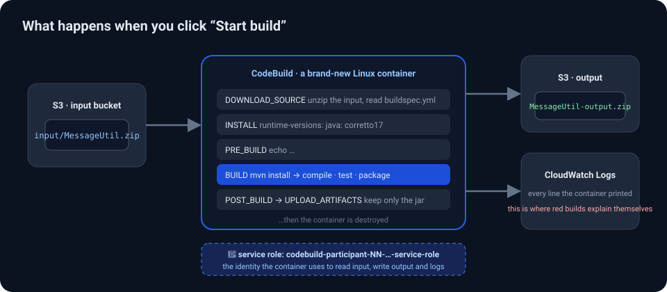
| Word | Meaning in this lab |
|---|---|
| Source | A .zip of your code, stored in an S3 bucket |
| Build project | The CodeBuild configuration: where the source is, which container image to use, where to put the output |
| buildspec.yml | The recipe: shell commands grouped into phases (install, pre_build, build, post_build) plus a list of output files |
| Artifact | The build output (messageUtil-1.0.jar), zipped and uploaded to S3 |
| Service role | The IAM identity CodeBuild assumes while working for you. It is what lets the build read your input bucket and write the output. No passwords, no public buckets. |
| Build log | Every line the container printed, streamed to CloudWatch Logs. When a build goes red this is where the truth lives. |
Why not just build on my laptop? You can. But a laptop build proves only that your laptop can build it. A CodeBuild build proves that a clean machine with nothing but the recipe can build it. That is the difference between a hope and a guarantee.
Part 1 · Get the sample app
The app is deliberately tiny so the process is the star.
sample-app/
├── buildspec.yml ← the recipe CodeBuild follows
├── pom.xml ← Maven project file (dependencies, Java version)
└── src/
├── main/java/MessageUtil.java ← the "application" (prints a message)
└── test/java/TestMessageUtil.java ← three JUnit tests (one of them switched off…)
- Download the folder
lab1-codebuild/sample-app/from the course repository to your computer (or clone the repo). A ready-madeMessageUtil.zipof the same files is also provided for your first upload. - Open
buildspec.ymland read it. Here it is with notes:
version: 0.2 # buildspec format version (always 0.2 today)
phases:
install:
runtime-versions:
java: corretto11 # which Java the build container should set up
pre_build:
commands:
- echo "Nothing to do in the pre_build phase..."
build:
commands:
- echo "Build started on $(date)"
- mvn install # compile + run tests + package the jar
post_build:
commands:
- echo "Build completed on $(date)"
artifacts:
files:
- target/messageUtil-1.0.jar # the ONE file we want to keep when the container dies
- Now open
pom.xmland find these two lines:
<maven.compiler.source>17</maven.compiler.source>
<maven.compiler.target>17</maven.compiler.target>
Keep both files in mind. Something here is going to matter in Part 4.
How to zip correctly (you will do this more than once). CodeBuild expects buildspec.yml at the top level of the zip, not inside a folder.
- macOS / Linux terminal, from inside
sample-app/:zip -r MessageUtil.zip buildspec.yml pom.xml src/ unzip -l MessageUtil.zip # buildspec.yml must appear with no folder in front of it - Windows Explorer: open the
sample-appfolder, selectbuildspec.yml,pom.xmlandsrctogether → right-click → Send to → Compressed (zipped) folder → rename toMessageUtil.zip. - macOS Finder: select the three items → right-click → Compress → rename
Archive.ziptoMessageUtil.zip.
Part 2 · Create the input bucket and upload the source
Console → S3 → Create bucket.
Bucket name:
cicd-lab1-participant-NN(lowercase, your number). Region: US West (Oregon).Leave Block all public access = ON. CodeBuild will read the bucket using its own IAM role; nothing about this lab needs a public bucket. Keep every other default. Create bucket.
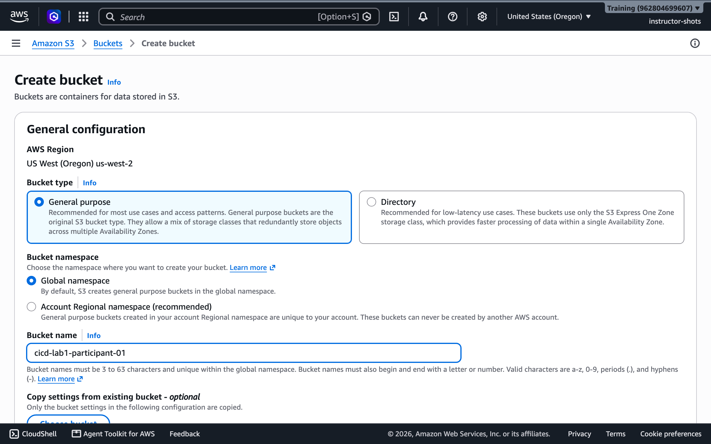
Open the bucket → Create folder → name
input→ Create folder.Open the
input/folder → Upload → Add files → chooseMessageUtil.zip→ Upload.
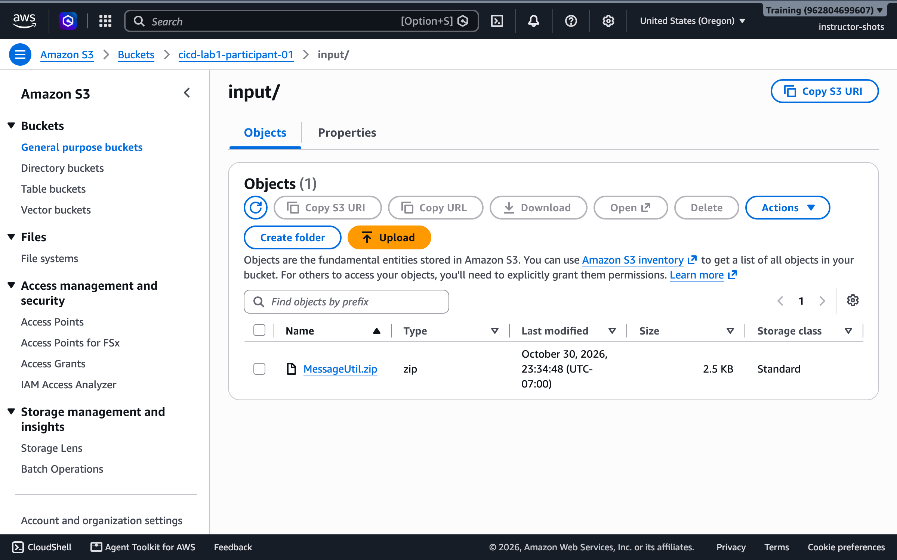
✅ Checkpoint —
s3://cicd-lab1-participant-NN/input/MessageUtil.zipexists and is about 2.5 KB.
Part 3 · Create the build project
Console → CodeBuild (search "CodeBuild" in the top bar) → Build projects → Create build project.
Project configuration
- Project name:
participant-NN-codebuild-demo - Project type: Default project
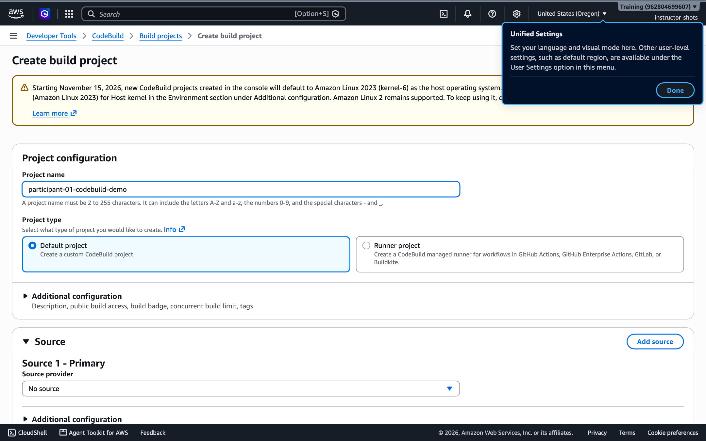
- Project name:
Source
- Source provider: Amazon S3
- Bucket:
cicd-lab1-participant-NN - S3 object key or S3 folder:
input/MessageUtil.zip
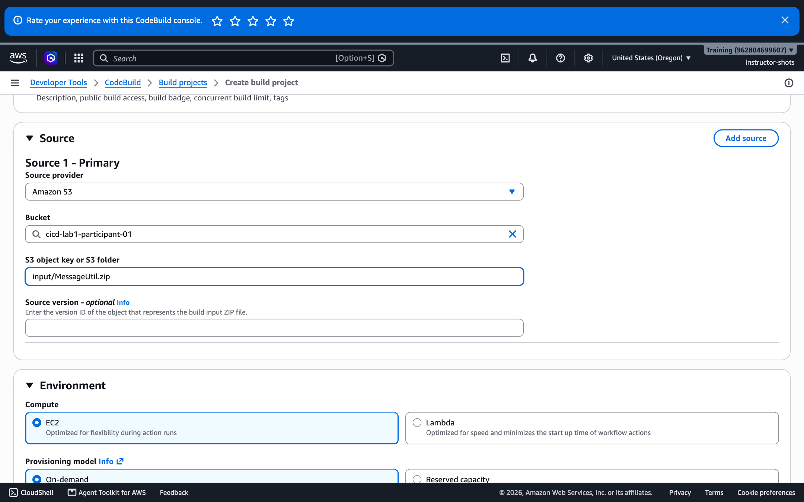
Environment – this is the container your build runs in.
- Compute: EC2 · Provisioning model: On-demand · Environment image: Managed image · Running mode: Container
- Operating system: Amazon Linux · Runtime(s): Standard
- Image: the newest
aws/codebuild/amazonlinux-x86_64-standard:…offered (6.0 at the time of writing) · Image version: Always use the latest image for this runtime version - Service role: New service role. Accept the suggested name (
codebuild-participant-NN-codebuild-demo-service-role). Leave compute size at its default.
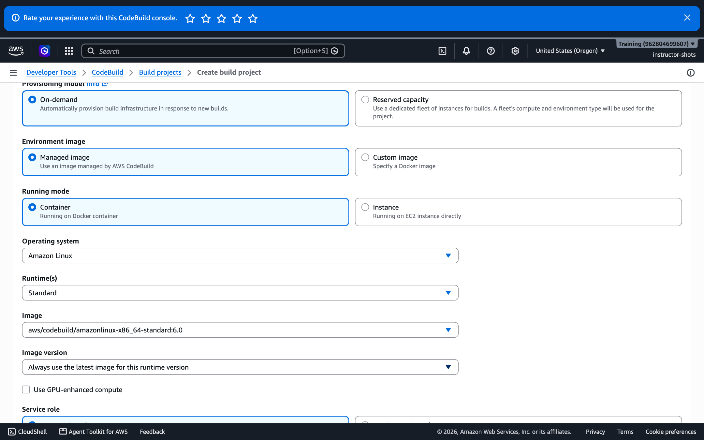
📝NoteWhat just got created for you? An IAM role with a trust policy saying "the CodeBuild service may assume me" and permissions to write logs and read/write the S3 locations you named. This is the single most important security idea in this course: services act with explicitly granted identities, scoped to the job. You never type your own credentials into a build.
Buildspec → Use a buildspec file. Leave the name blank (defaults to
buildspec.ymlat the root of the zip).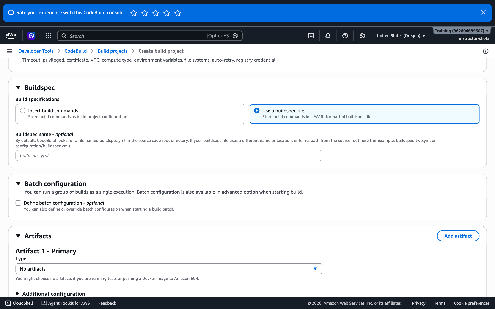
Batch configuration → leave unchecked.
Artifacts – where the output goes.
- Type: Amazon S3
- Bucket name:
cicd-lab1-participant-NN - Name:
MessageUtil-output - Path:
output - Namespace type: None
- Expand Additional configuration → Artifacts packaging: Zip
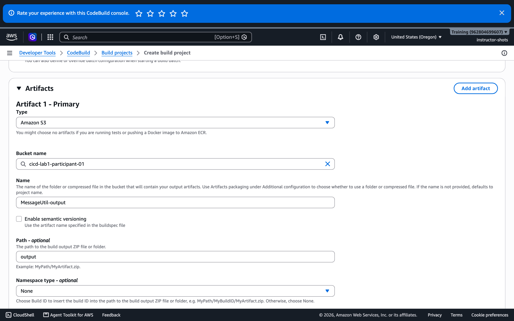
Logs → keep CloudWatch logs checked (group/stream names optional).
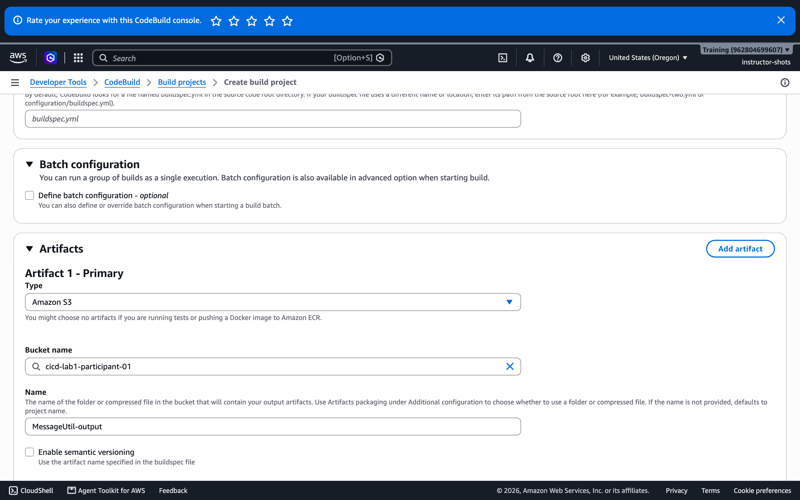
Create build project.
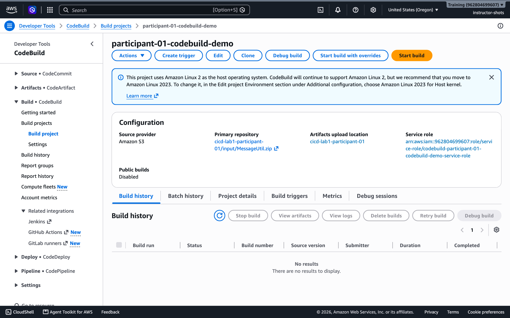
✅ Checkpoint — The project page shows Source provider: Amazon S3, Primary repository: cicd-lab1-participant-NN/input/MessageUtil.zip, Artifacts upload location: cicd-lab1-participant-NN, and a service role ARN.
Part 4 · Run the build. Watch it fail. Fix it.
Your first build is going to fail. That is on purpose. Nobody learns to read a build log from a green build. Resist the urge to ask for the answer; the hints below are ordered from gentle to blunt.
On the project page click Start build (top-right, orange).
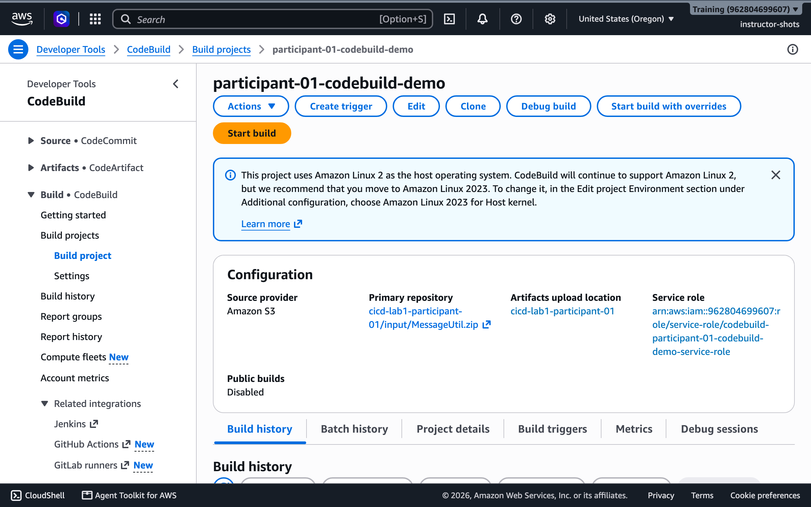
You land on the build page. Watch the Status field. Within about a minute it turns to Failed.
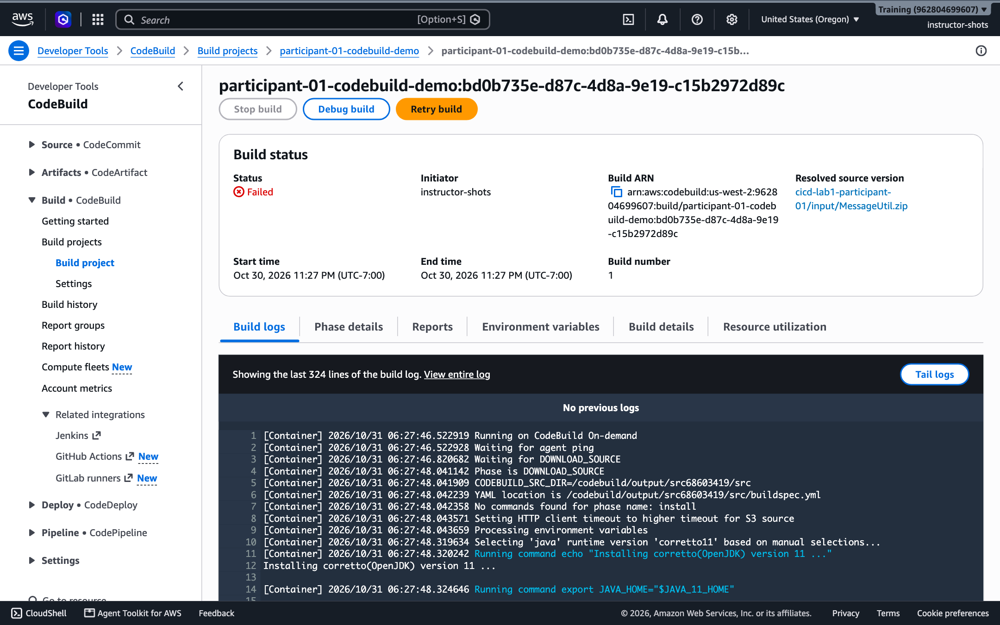
🔧 Troubleshooting exercise 1 — "invalid target release"
Your job: find out why it failed and make it pass, without changing pom.xml.
Where to look, in order:
Phase details tab – which phase went red? (The phases run top to bottom; the first red one is the culprit. Everything after it is skipped or is just clean-up.)
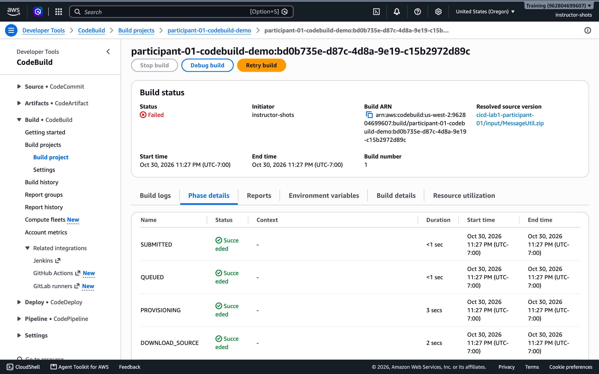
Build logs tab – scroll to the bottom. CodeBuild prints the last few hundred lines; the real error is almost always a few lines above the final "Phase context status code" message.
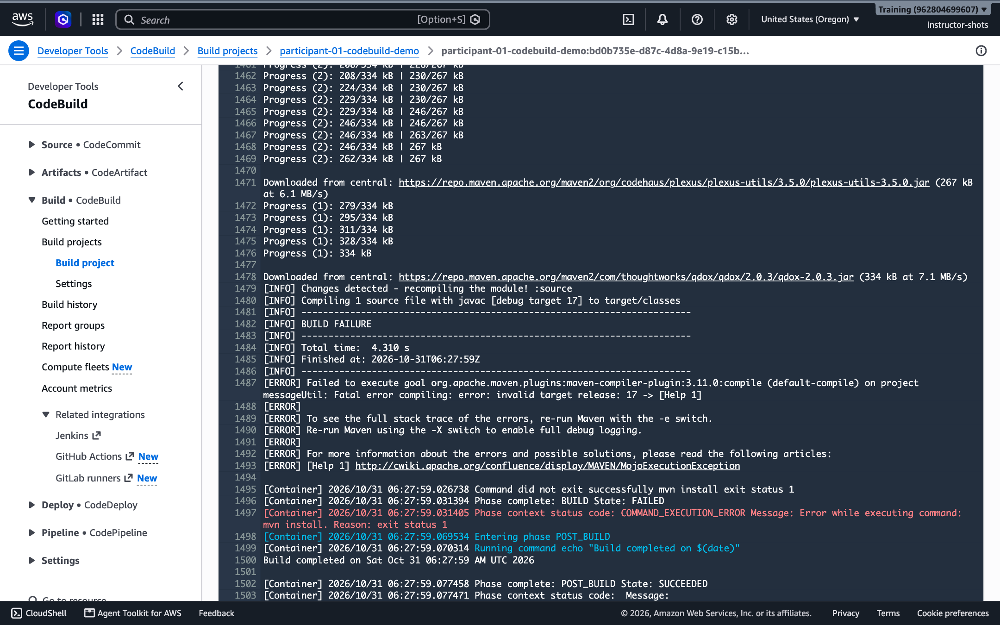
💡 Hint 1 — which phase, which command
The BUILD phase failed, and the phase context says COMMAND_EXECUTION_ERROR … Error while executing command: mvn install. Reason: exit status 1. So Maven itself failed. Scroll up in the log to find Maven's own [ERROR] lines.
💡 Hint 2 — read Maven's complaint
The key line is:
[ERROR] Failed to execute goal org.apache.maven.plugins:maven-compiler-plugin:3.11.0:compile
(default-compile) on project messageUtil: Fatal error compiling: error: invalid target release: 17
Maven was asked to produce Java 17 bytecode (that is what pom.xml says) but the Java compiler available in the container is older. Which Java did the container install? Search the log for the word corretto.
💡 Hint 3 — the two numbers that disagree
Near the top of the log: Selecting 'java' runtime version 'corretto11' based on manual selections…. The buildspec asked for Java 11; the project file needs Java 17. One file has to change, and the exercise says not to touch pom.xml.
✅ Solution
In buildspec.yml change the runtime version:
install:
runtime-versions:
java: corretto17
Then:
- Re-zip (
zip -r MessageUtil.zip buildspec.yml pom.xml src/from insidesample-app/). - In S3, open
cicd-lab1-participant-NN/input/→ Upload the newMessageUtil.zip(same name; S3 simply replaces it). - Back in CodeBuild → your project → Start build.
The build now reaches BUILD SUCCESS and finishes green.
Why this is a classic: the build environment (the container) and the build definition (pom.xml) are two separate sources of truth about "which Java". CI makes that disagreement visible on every single run instead of on one unlucky laptop.
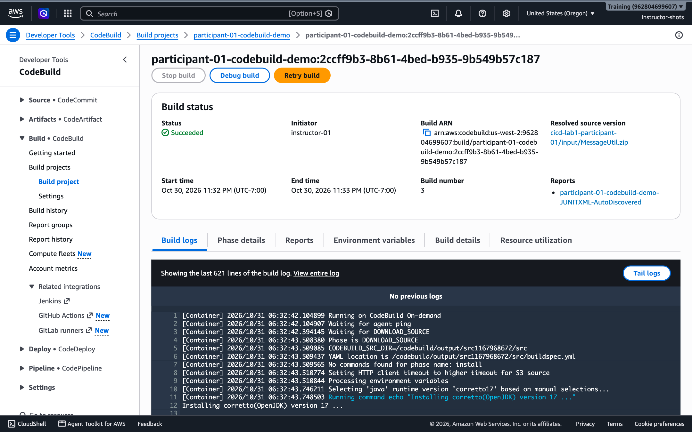
✅ Checkpoint — Status Succeeded, and under Reports you see an auto-discovered JUnit report link.
Part 5 · Read the results like a professional
A green build is not the end; it is a pile of evidence. Spend five minutes with each tab.
Phase details
Every phase, how long it took, and its status. Notice PROVISIONING (starting the container) and DOWNLOAD_SOURCE happen before any of your commands run, and UPLOAD_ARTIFACTS happens after. Total build time is what you pay for.
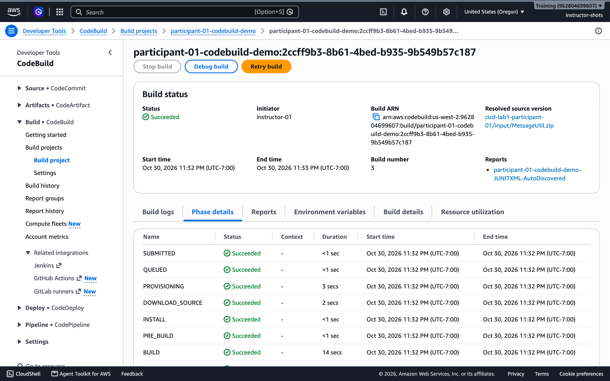
Reports
CodeBuild noticed Maven's JUnit XML files and turned them into a test report. Click the report link.
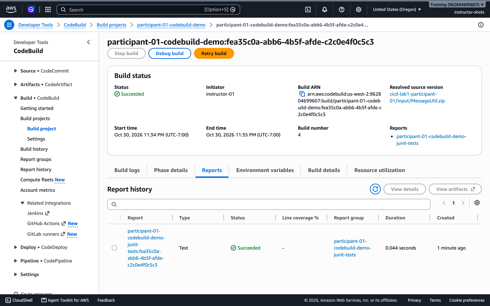
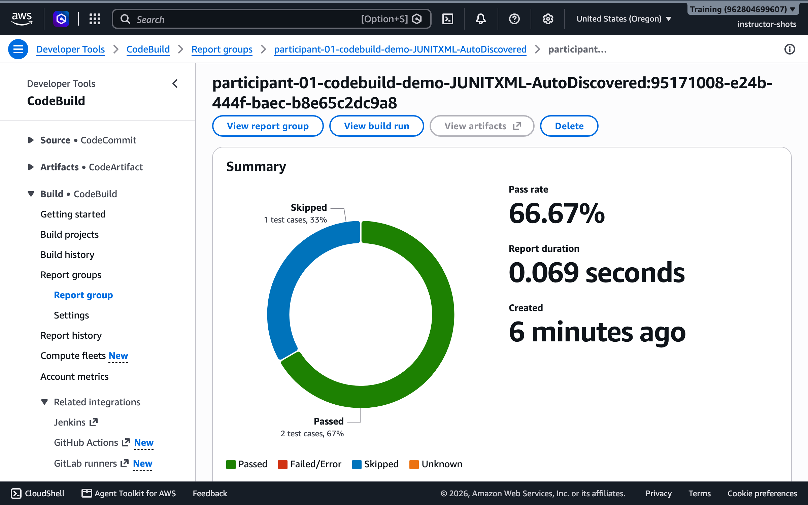
Three tests: two passed, one skipped, in a fraction of a second. This report is what a team looks at instead of trusting "I ran the tests locally".
Skipped? A skipped test is a light that is neither red nor green: somebody turned it off. Remember that. Mission D is about that test.
The artifact
S3 → cicd-lab1-participant-NN → output/ → MessageUtil-output.zip. Download it and look inside: target/messageUtil-1.0.jar. That jar is the only thing a deployment needs. Everything else (the source, the compiler, the container) is gone.
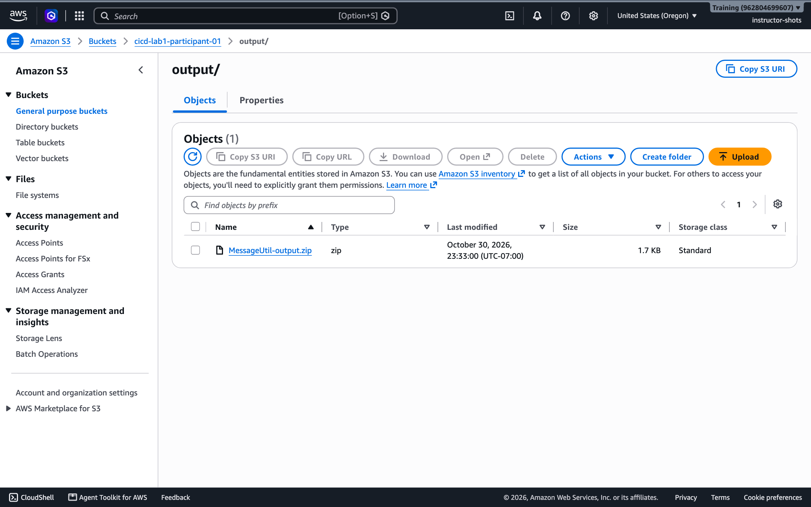
Build history
The project page keeps every run: who started it, which source version, how long it took. In a real team this is your audit trail.
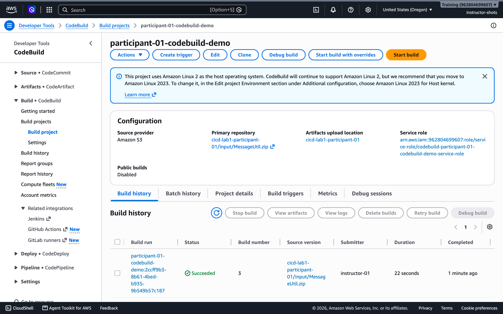
Where are the logs really? CodeBuild shows the tail of the log, but the complete log lives in CloudWatch Logs, log group /aws/codebuild/participant-NN-codebuild-demo. Click View entire log on the build page. Logs outlive the container, the build, and even the project.
Part 6 · Missions
The core path is done: Dave's laptop is officially irrelevant. Everything below is a mission: self-contained, 10–15 minutes, with escalating hints and a hidden solution. Missions A–C deepen what you just did. D is a bug hunt. E–H each wire one new AWS service into your build. Do the four marked recommended if you are short on time; do all eight for the full set of badges.
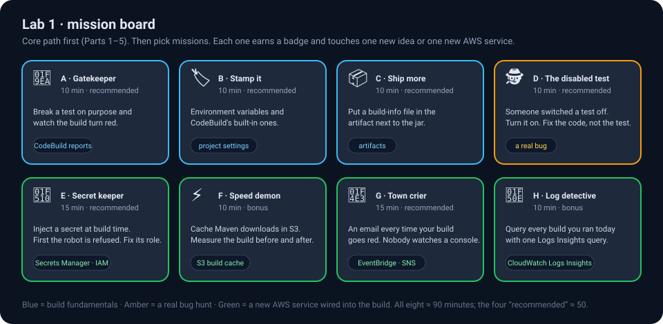
| Mission | Badge | New idea / service | Time |
|---|---|---|---|
| A · Gatekeeper | 🧪 | a failing test is a red build | 10 min · recommended |
| B · Stamp it | 🏷️ | environment variables, built-in variables | 10 min |
| C · Ship more | 📦 | multi-file artifacts | 10 min |
| D · The disabled test | 🕵️ | a real bug hiding behind @Ignore |
10 min · recommended |
| E · Secret keeper | 🔐 | Secrets Manager + a role fix | 15 min · recommended |
| F · Speed demon | ⚡ | S3 build cache, measured | 10 min |
| G · Town crier | 📣 | EventBridge → SNS e-mail on failure | 15 min · recommended |
| H · Log detective | 🔎 | CloudWatch Logs Insights across all builds | 10 min |
Keep score. Each mission ends with a one-line proof (a log line, a report, an e-mail, a query result). Paste your proofs into the class chat as you go; the instructor keeps a leaderboard.
Mission A · 🧪 Gatekeeper — make a test fail on purpose
Goal: prove that a failing unit test turns the build red and that the test report tells you exactly which test.
- In
src/test/java/TestMessageUtil.java, change the expected salutation intestSalutationMessageso it no longer matches what the code produces. - Re-zip, re-upload, Start build.
- Predict first: which phase will fail? Then check.
💡 Hint
The tests run inside mvn install, so the failure surfaces in the BUILD phase, not in a separate "test" phase. Open the Reports tab afterwards: the report now shows 1 failed test case and the assertion message.
✅ Solution
Change
message = "Hi!" + "Robert";
to
message = "Hello!" + "Robert";
Build → Failed in BUILD. Log shows Tests run: 3, Failures: 1 … testSalutationMessage … expected:<H[ello]!Robert> but was:<H[i]!Robert>. The Reports tab shows the failing test by name:
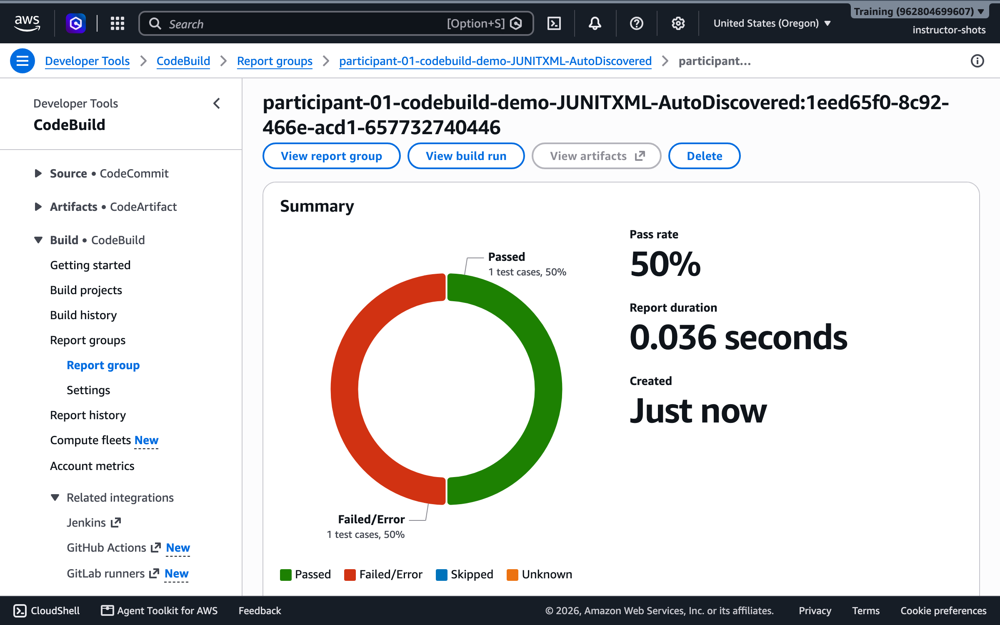
The lesson: in CI, tests are not advice, they are a gate. Nothing downstream (packaging, deployment) runs while the gate is red. Change the line back, rebuild, and confirm green before moving on.
Proof: the report line that names the failed test.
Mission B · 🏷️ Stamp it — an environment variable and the build number
Goal: customise the build from the project settings without editing code, and discover CodeBuild's built-in variables.
- In the console: project → Edit → Environment → expand Additional configuration → Environment variables → add
GREETING=Hello from participant-NN(type Plaintext) → Update environment. - In
buildspec.yml, make thepre_buildphase print the greeting and the number of this build. - Re-zip, re-upload, build, and find your line in the log.
💡 Hint 1
Environment variables are available to every command in every phase as ordinary shell variables: $GREETING.
💡 Hint 2
CodeBuild sets many variables for you. The one you want is CODEBUILD_BUILD_NUMBER. (Others worth knowing: CODEBUILD_BUILD_ID, CODEBUILD_SRC_DIR, CODEBUILD_RESOLVED_SOURCE_VERSION.)
✅ Solution
pre_build:
commands:
- echo "$GREETING — this is build #$CODEBUILD_BUILD_NUMBER"
In the log you will see Hello from participant-NN — this is build #6 (your number will differ).
The lesson: configuration that varies (names, flags, secrets) belongs outside the code, in the environment. Plaintext is fine for a greeting. For anything secret, see Mission E.
Proof: your greeting line in the log, with the build number.
Mission C · 📦 Ship more than the jar
Goal: make the build write a build-info.txt (build number + UTC time) and include it in the artifact next to the jar.
💡 Hint 1
Any command can create files inside the container. post_build is a natural place, because by then the build has already succeeded.
💡 Hint 2
The artifacts.files list controls what survives the container. It accepts multiple entries and glob patterns.
✅ Solution
post_build:
commands:
- echo "Build completed on $(date)"
- echo "build=$CODEBUILD_BUILD_NUMBER time=$(date -u +%Y-%m-%dT%H:%M:%SZ)" > target/build-info.txt
artifacts:
files:
- target/messageUtil-1.0.jar
- target/build-info.txt
Download the new output/MessageUtil-output.zip; it now contains both files.
The lesson: artifacts should be self-describing. When something misbehaves in production three weeks from now, the first question is "which build is this?" – and the answer should be inside the artifact, not in someone's memory. (Lab 2's Build stage stamps the build number straight into the web page for the same reason.)
Proof: unzip -l MessageUtil-output.zip showing two files.
Mission D · 🕵️ The disabled test
Goal: find out what Dave was hiding. Then fix the code, not the test.
- Open
src/test/java/TestMessageUtil.javaand read the third test,testSalutationIsStable. Note the line above it:@Ignore("flaky?? passes on my laptop, will look at it next sprint -- Dave") - Delete that
@Ignore(...)line (leave@Test). Re-zip, upload, build. - Predict first: will the build pass? Then look at the Reports tab.
💡 Hint 1 — what the report says
The build is red, and the report shows testSalutationIsStable failed with:
expected:<Hi![]Robert> but was:<Hi![Hi!]Robert>
The test calls salutationMessage() twice and expects the same answer both times. The second call returned Hi!Hi!Robert. Why would a method give a different answer the second time?
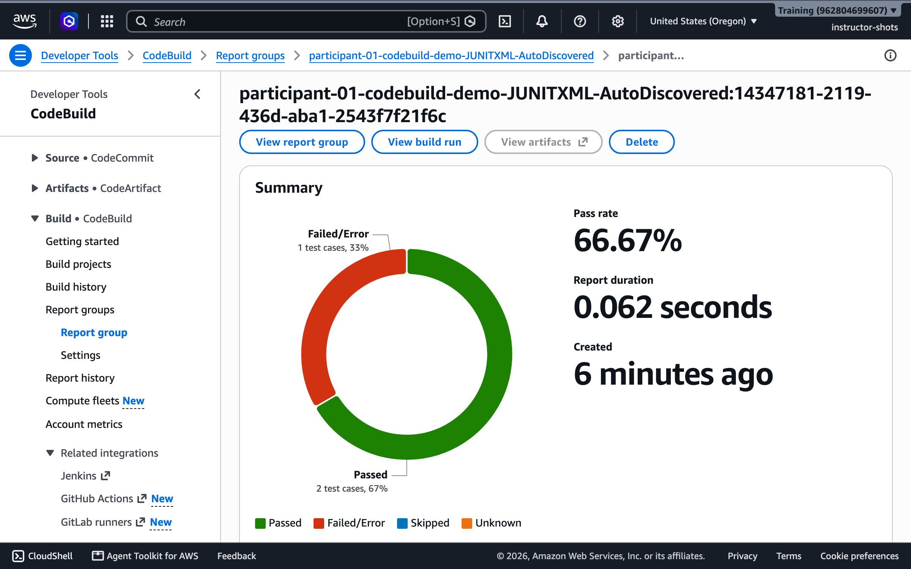
💡 Hint 2 — read the code, not the test
Look at MessageUtil.salutationMessage():
message = "Hi!" + message;
It does not just return a greeting; it overwrites the field message every time it is called. State leaks from one call to the next. The test is right. The code is wrong. "Flaky on my laptop" was Dave running the tests in a different order.
✅ Solution
In src/main/java/MessageUtil.java:
public String salutationMessage() {
String salutation = "Hi!" + message;
System.out.println(salutation);
return salutation;
}
Re-zip, upload, build → green; the report shows 3 passed, 0 skipped. The other two tests still pass, so nothing else depended on the bug.
The lesson: a skipped test is a red light somebody put a blanket over. When a test fails, the default assumption is that the code is wrong, not the test; "fix" a test only when you can explain why its expectation was incorrect. And a test that passes or fails depending on order is almost always leaking state.
Proof: a report with 3 passed and 0 skipped.
Mission E · 🔐 Secret keeper — Secrets Manager
Goal: give the build a secret (say, a deploy token) without putting it in the zip, the project settings or the log. Along the way, watch the robot get refused and fix its identity.
Console → Secrets Manager → Store a new secret → Secret type Other type of secret → Plaintext tab → replace the contents with
orbit-7f3a-launch-code(ignore the red underline: it is not JSON and does not need to be) → Next.Secret name
participant-NN/lab1/deploy-token→ Next → Next → Store.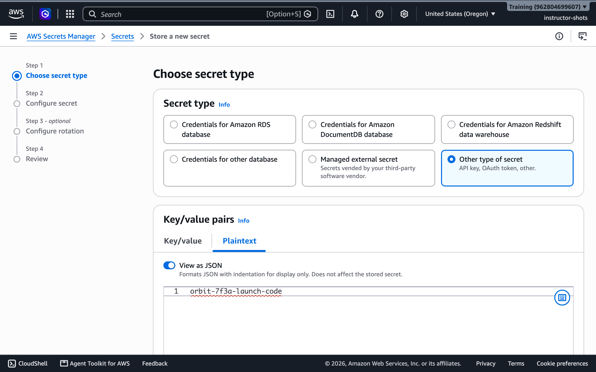
In
buildspec.yml, add anenvsection at the top and print the token inpre_build:version: 0.2 env: secrets-manager: DEPLOY_TOKEN: participant-NN/lab1/deploy-token phases: install: runtime-versions: java: corretto17 pre_build: commands: - echo "Deploy token is $DEPLOY_TOKEN"Re-zip, upload, Start build. It fails. Before reading on: which phase, and what does the message say? Which robot was refused?
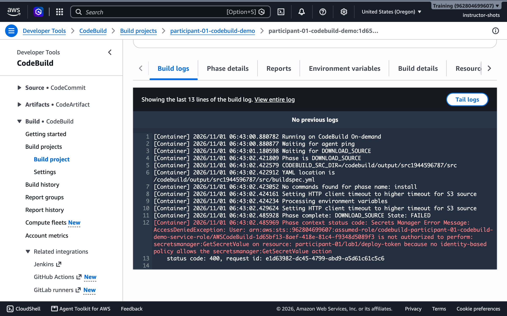
💡 Hint 1 — the sentence
The build fails in DOWNLOAD_SOURCE, before any of your commands run, because CodeBuild resolves env variables while preparing the container. The message reads like a sentence:
Secrets Manager Error Message: AccessDeniedException:
User: arn:aws:sts::…:assumed-role/codebuild-participant-NN-codebuild-demo-service-role/…
is not authorized to perform: secretsmanager:GetSecretValue
on resource: participant-NN/lab1/deploy-token
Who = the CodeBuild service role. What = secretsmanager:GetSecretValue. Which = your secret. Fix exactly that, nothing more.
💡 Hint 2 — where to fix it
IAM → Roles → codebuild-participant-NN-codebuild-demo-service-role → Add permissions → Create inline policy → JSON. You need the secret's ARN: Secrets Manager → your secret → Secret ARN (it ends in six random characters; copy the whole thing).
✅ Solution
Inline policy (name it read-lab1-secret):
{
"Version": "2012-10-17",
"Statement": [{
"Effect": "Allow",
"Action": "secretsmanager:GetSecretValue",
"Resource": "arn:aws:secretsmanager:us-west-2:962804699607:secret:participant-NN/lab1/deploy-token-XXXXXX"
}]
}
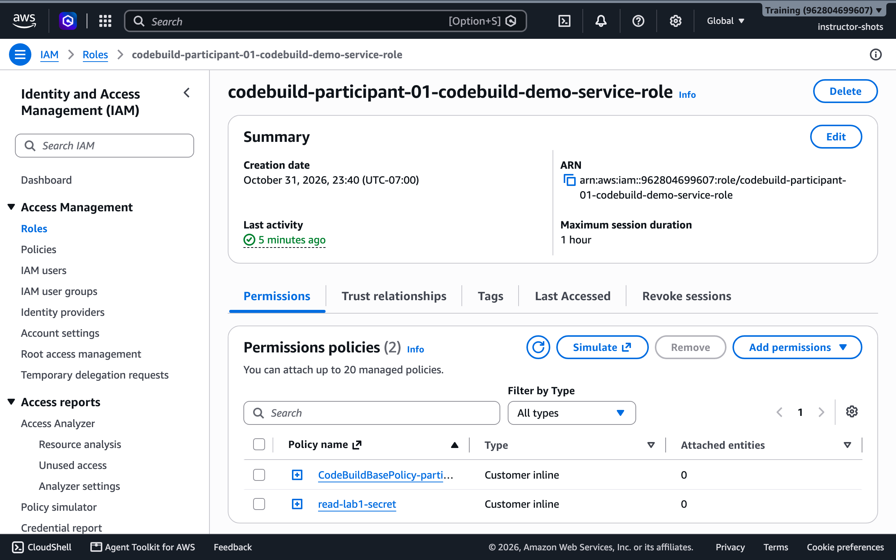
Wait ten seconds, Start build again → green. Now read the log:
Deploy token is ***
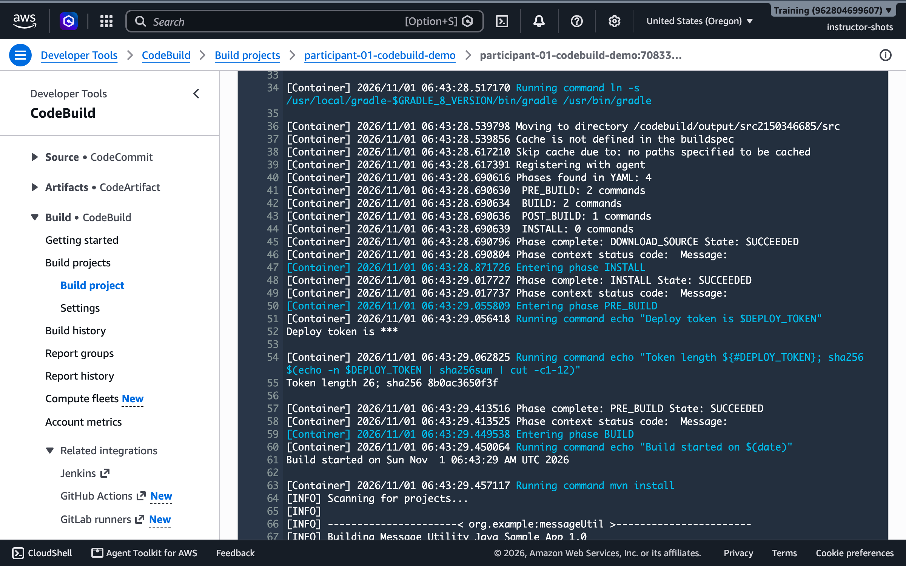
CodeBuild masked the value. Was it really there? Add a second command and rebuild:
- echo "Token length ${#DEPLOY_TOKEN}; sha256 $(echo -n $DEPLOY_TOKEN | sha256sum | cut -c1-12)"
→ Token length 22; sha256 … — the robot had the real value; only the log is masked.
The lesson, in three parts:
- Secrets are fetched at run time by the robot's role, never stored in the recipe. The zip, the project settings and S3 never contain the value.
- The role gets one verb on one resource. Not
SecretsManagerReadWrite, not*. - Masking is a courtesy, not a safety net. The length and hash just leaked;
echo $DEPLOY_TOKEN > target/token.txtwould ship it in the artifact. Treat the value as radioactive inside the build too.
(SSM Parameter Store works the same way with parameter-store: instead of secrets-manager:; it is free for standard parameters and fine for non-secret config.)
Proof: the *** line and the Token length 22 line from the same build.
Mission F · ⚡ Speed demon — cache the downloads
Goal: make the build measurably faster by caching Maven's downloads between runs, and prove it with numbers.
Open your last green build → Build logs. Count the lines that start with
Downloading from central:(there are over two hundred). Every build starts from an empty container, so Maven downloads the same plugins and libraries every single time. Note the BUILD phase duration in Phase details (about 15 s).Project → Edit → scroll down to the Artifacts section → expand Additional configuration (Cache, encryption key) → Cache type Amazon S3 → Cache bucket
cicd-lab1-participant-NN→ Cache path prefixcache→ scroll to the bottom → Update project.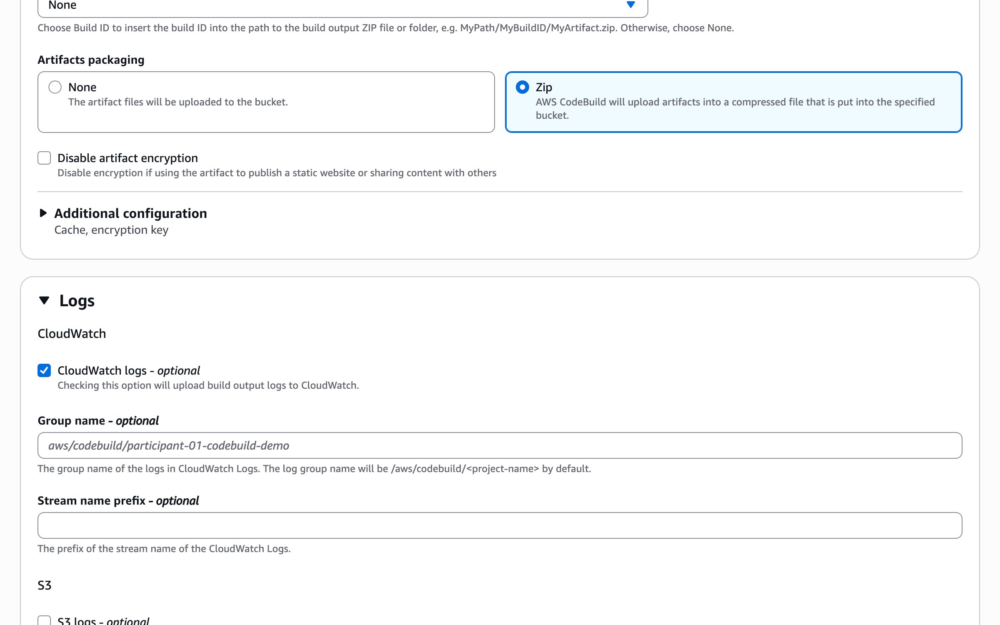
Tell the buildspec what to cache. Add at the bottom of
buildspec.yml:cache: paths: - '/root/.m2/**/*'Re-zip, upload and build twice. Compare the two logs and the two BUILD durations.
💡 Hint
Build 1 after the change: near the top, Downloading S3 cache… Unable to download cache: AccessDenied … s3:ListBucket (nothing to download yet; read on), then the usual 200+ downloads, then at the very end Uploading S3 cache…. Build 2: Downloading S3 cache… Unarchiving cache… and zero Downloading from central: lines.
✅ Solution & numbers
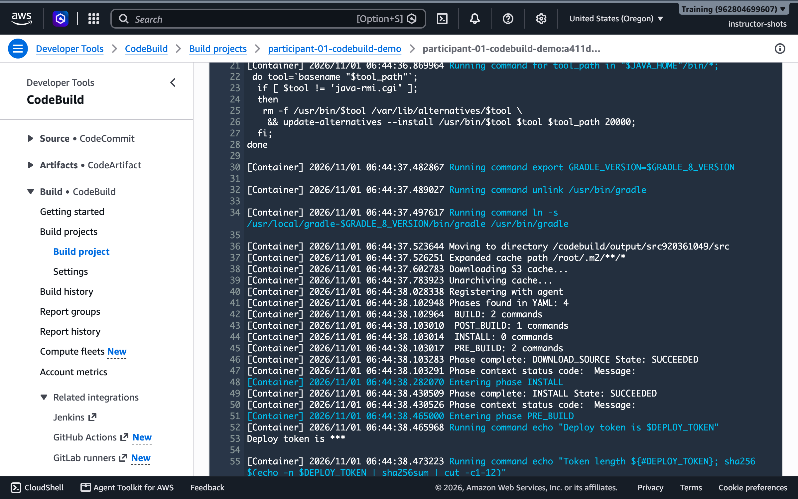
Measured in the class account:
| Build before cache | First cached build | Second cached build | |
|---|---|---|---|
Downloading from central: lines |
242 | 242 | 0 |
| BUILD phase | 16 s | 16 s | 10 s |
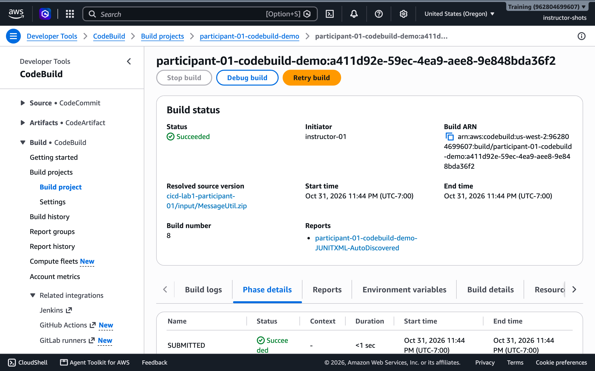
For a 30-line Java app the saving is a few seconds; for a real project with hundreds of dependencies it is minutes per build, times every build, times every developer.
About that AccessDenied line. On the first cached build CodeBuild tried to list the bucket to find an existing cache and the auto-generated role has GetObject/PutObject but not s3:ListBucket. CodeBuild shrugged, built without a cache, and uploaded one at the end. The warning is harmless, but read it like a sentence anyway: who, what, which. If it bothers you, add s3:ListBucket on arn:aws:s3:::cicd-lab1-participant-NN to the role's inline policy and it disappears.
S3 → your bucket → cache/ → one object of about 18 MB: that is Maven's .m2 folder, zipped. Delete that object to "clear the cache".
The lesson: caching trades a little complexity (and a new class of "works because of a stale cache" bugs) for speed. Cache dependencies, never build outputs.
Proof: two BUILD durations, before and after.
Mission G · 📣 Town crier — e-mail on failure (EventBridge + SNS)
Goal: nobody should have to watch a console. Make AWS e-mail you the moment one of your builds fails.
SNS → Topics → Create topic → Type Standard → Name
participant-NN-alerts→ Create topic.On the topic page → Create subscription → Protocol Email → Endpoint: your e-mail address → Create subscription. Open your inbox and click Confirm subscription (check spam). The subscription must say Confirmed before anything arrives.
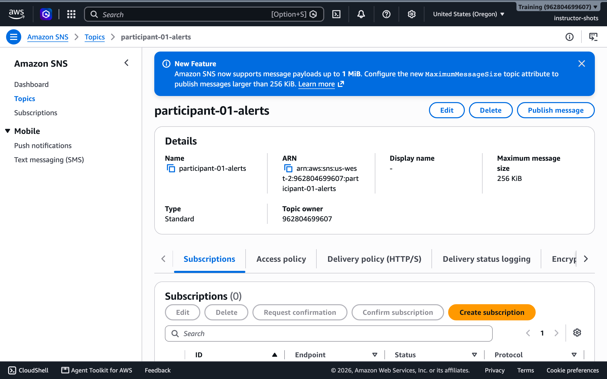
Amazon EventBridge → Rules → Create rule → Name
participant-NN-build-failed→ Rule type Rule with an event pattern → Next.Event source AWS events or EventBridge partner events → Creation method: Use pattern form → AWS service CodeBuild → Event type CodeBuild Build State Change → Specific state(s) →
FAILED→ Specific project name(s) →participant-NN-codebuild-demo→ Next.Target: AWS service → SNS topic →
participant-NN-alerts→ Next → Next → Create rule. (The console grants EventBridge permission to publish to the topic for you.)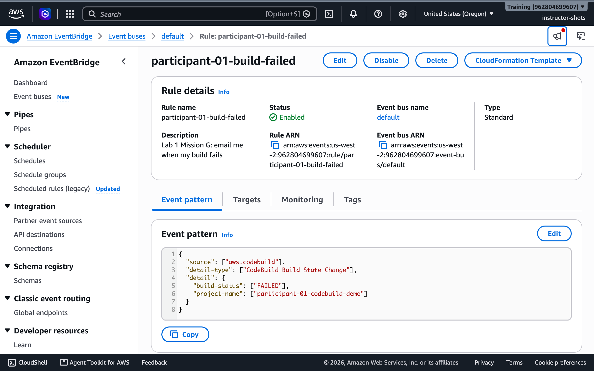
Break the build on purpose (Mission A's edit works well), upload, build, and watch your inbox.
💡 Hint 1 — the pattern, as JSON
If you prefer the Custom pattern (JSON editor), this is the whole thing:
{
"source": ["aws.codebuild"],
"detail-type": ["CodeBuild Build State Change"],
"detail": {
"build-status": ["FAILED"],
"project-name": ["participant-NN-codebuild-demo"]
}
}
Every build emits one of these events on every state change; the rule is a filter.
💡 Hint 2 — no e-mail?
In order: (1) is the subscription Confirmed? (2) EventBridge → your rule → Monitoring tab: did TriggeredRules and Invocations go to 1? If TriggeredRules is 0, the pattern did not match (project name typo, or you filtered on SUCCEEDED). (3) SNS → topic → Access policy: there must be a statement allowing events.amazonaws.com to SNS:Publish.
✅ Solution & a nicer message
The raw e-mail is the full JSON event: useful, ugly. On the rule → Targets → Edit → Additional settings → Configure target input: Input transformer:
- Input path:
{ "project": "$.detail.project-name", "status": "$.detail.build-status", "id": "$.detail.build-id" } - Template:
"🚨 Build <status> for <project>. Build id: <id>. Open CodeBuild in us-west-2 and read the log."
Measured in the class account: the rule triggered and SNS published within the same minute the build failed.
The lesson: a pipeline that only reports to a console is a pipeline nobody watches. Events (EventBridge) plus a fan-out (SNS: e-mail, SMS, chat webhooks, Lambda) is the standard AWS pattern, and Lab 2 reuses this very topic for deployment alarms.
Proof: the e-mail, or the rule's Invocations = 1 graph.
Mission H · 🔎 Log detective — Logs Insights
Goal: answer questions about all your builds at once instead of opening them one by one.
CloudWatch → Logs → Logs Insights. The console may redirect you to the new Log Analytics page (a blue banner says so; click OK). Either page works.
Point the query at your log group and run it:
- Log Analytics page: in Query scope, change the Log group filter from All to
/aws/codebuild/participant-NN-codebuild-demo, click 3h, then replace everything after the firstSOURCE … |line in the editor with the query below and press Run. - Classic Logs Insights page: Select log group(s) → your group → time range 3h → paste the query → Run query.
fields @message | filter @message like /BUILD SUCCESS|BUILD FAILURE/ | parse @message "BUILD *" as verdict | stats count() as builds by verdict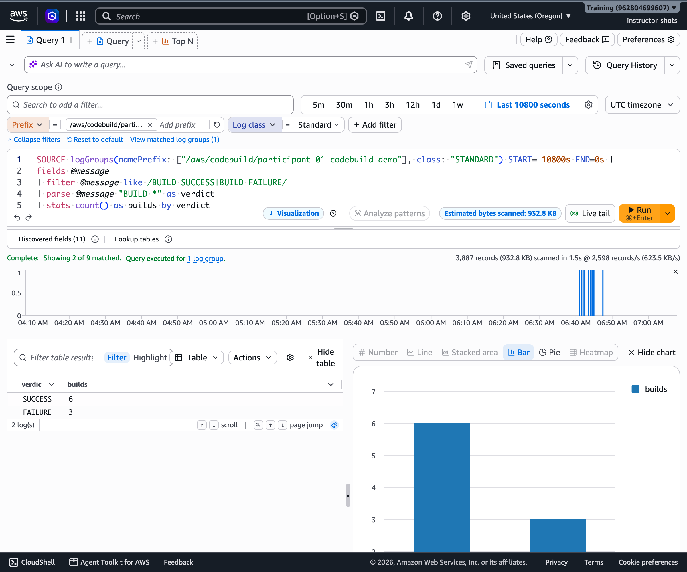
- Log Analytics page: in Query scope, change the Log group filter from All to
Now find every error from every build, newest first:
fields @timestamp, @logStream, @message | filter @message like /\[ERROR\]/ | sort @timestamp desc | limit 20
💡 Hint
Each build is one log stream inside the group; @logStream tells you which build an error came from. Click a row to expand it.
✅ Solution & a bonus question
Our verdict table after the morning's missions: FAILURE 3 · SUCCESS 5. The error query lists the expected:<…> but was:<…> lines from Missions A and D with their build streams.
Bonus: which build was slowest? Maven prints Total time: 3.502 s:
fields @logStream, @message
| filter @message like /Total time:/
| parse @message /Total time:\s+(?<secs>[0-9.]+)/
| stats max(secs) as slowest, min(secs) as fastest, avg(secs) as average
The lesson: build logs are data. Retention outlives containers and projects (set it on the log group), and one query across weeks of builds answers "when did this start failing?" faster than any amount of clicking.
Proof: your verdict table.
Part 7 · Clean up
Builds are billed per minute and storage per GB, so this lab costs cents, but shared accounts fill up with leftovers fast.
- CodeBuild → Build projects → select
participant-NN-codebuild-demo→ Delete build project. - S3 → select
cicd-lab1-participant-NN→ Empty (this removes thecache/object too) → then Delete. - If you did the missions: EventBridge → Rules → delete
participant-NN-build-failed· SNS → Topics → deleteparticipant-NN-alerts(skip this one if you are going on to Lab 2 today; it reuses the topic) · Secrets Manager →participant-NN/lab1/deploy-token→ Actions → Delete secret (Secrets Manager insists on a 7-day waiting period; that is fine). - The IAM service role and its inline policies stay (students cannot delete roles in this account); the instructor removes those in bulk.
If you are continuing to Lab 2 today, you can leave the bucket for now and delete both buckets at the end.
Part 8 · What you learned
- CI = a clean, automated, repeatable build of every change, with a binary verdict.
- A buildspec is a recipe with phases; the first red phase is the one to read.
- Logs are the truth. The error is usually a few lines above the final "exit status" message.
- The build environment (container image, runtime versions) is as much a part of your build as the code.
- Artifacts are the only thing that leaves the container; make them self-describing.
- CodeBuild acts through a service role – explicit, scoped permissions instead of shared credentials or public buckets.
- A skipped test is a hidden red light; when a test fails, suspect the code first.
- Secrets are fetched at run time by the role, one verb on one resource; the log masks them but masking is not a safety net.
- A build cache trades a little complexity for speed; cache dependencies, never outputs.
- Pipelines should push news to humans (EventBridge → SNS), and their logs are data (Logs Insights).
Quiz yourself
1. The BUILD phase fails with "exit status 1". Where exactly do you look next, and why not just at the last line?
Scroll up from the phase-context message in the Build logs: the last line only says that a command failed; the tool's own error ([ERROR] …) is above it. Phase details tells you which phase; the log tells you why.
2. You changed `buildspec.yml` on your laptop and clicked Start build, but the build behaves exactly as before. What did you forget?
To re-zip and re-upload to input/MessageUtil.zip. CodeBuild builds what is in S3, not what is on your disk. (A pipeline that watches a repo removes this step; that is Lab 2.)
3. Why does CodeBuild need a service role at all? Why can't it just use your permissions?
The build runs when you are not there – on a schedule, on a push, at 3 a.m. It needs its own identity whose permissions are limited to the job (read one bucket, write one bucket, write logs). Using a human's credentials would be both insecure and fragile.
4. Name two things that are destroyed at the end of every CodeBuild run and one thing that is not.
Destroyed: the build container and everything inside it (source checkout, compiled classes, downloaded Maven dependencies). Kept: the artifact in S3 and the log in CloudWatch Logs.
5. Mission E's first build failed in DOWNLOAD_SOURCE, before any of your commands ran. Why there, and which of the three words (who / what / which) did you have to change?
CodeBuild resolves env variables (including secrets-manager:) while preparing the container, so a refused secret stops the build before install. You changed who is allowed to do what: the service role gained secretsmanager:GetSecretValue. The which (the secret ARN) was already correct.
6. "The token is safe, CodeBuild masks it in the log." Name two ways it could still leak.
Writing it to a file that ends up in the artifact; printing a transformation of it (length, hash, base64, first characters); passing it on the command line of a tool that logs its arguments; a build that uploads it somewhere. Masking only covers the literal string in the log.
7. Mission F's second build downloaded nothing from Maven Central and was six seconds faster. What could now go wrong that could not go wrong before?
A stale cache: if a dependency version changes but the cached copy is used, the build no longer matches a clean machine. Clear the cache object in S3 (or change the cache prefix) whenever you suspect it.
Next: Lab 2 – From a zip in S3 to a live web page with CodePipeline and CodeDeploy